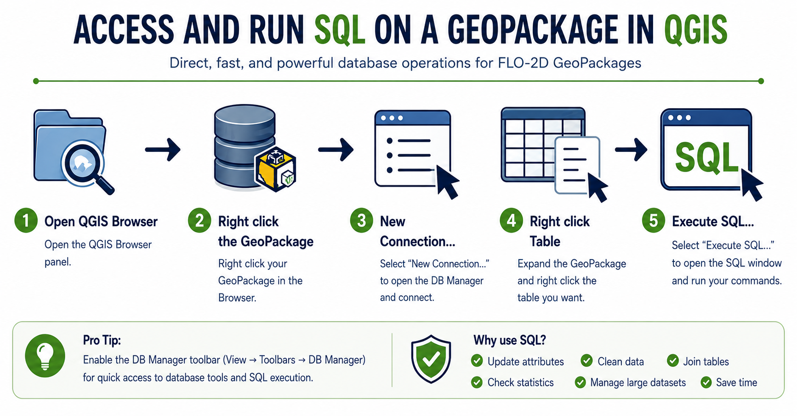
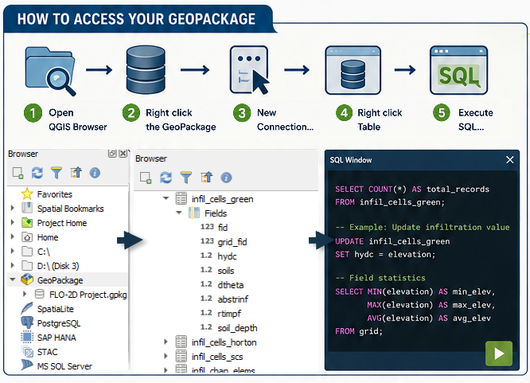
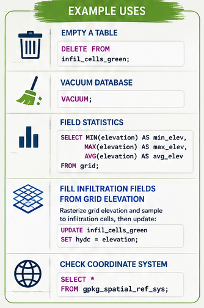
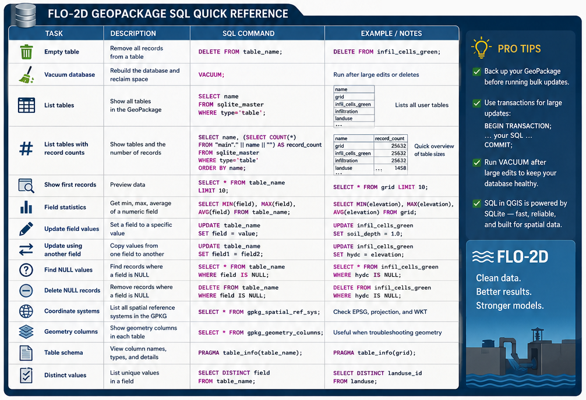

GeoPackage Tools & Tips
One of the most efficient advanced workflows in QGIS is accessing a FLO-2D GeoPackage directly through the QGIS Browser or DB Manager and running SQL commands on the database.
Direct SQL access can simplify many common GIS processing tasks and reduce the need for multiple processing tools, joins, or repetitive field calculator operations.
Typical uses include:
Processing large infiltration datasets
Cleaning or repairing project data
Troubleshooting locked GeoPackages
Reviewing coordinate system information
Updating attributes in bulk
Checking field statistics
Querying NULL values
Managing large tables more efficiently

Quick Workflow
Open the QGIS Browser Panel
Right click the GeoPackage
Connect New…
Load GeoPackage
Right click the desired table
Select

SQL Examples
A GeoPackage is a SQLite database and supports a wide range of SQL operations for querying, updating, and managing project data.
Common tasks include:
Listing tables and record counts
Calculating field statistics
Updating infiltration parameters
Checking coordinate systems
Finding NULL values
Cleaning unused records
Vacuuming the database
Joining attribute information between tables

Using ChatGPT to Generate SQL Commands
ChatGPT can be used to quickly generate SQL commands for FLO-2D and QGIS workflows.
Example prompts:
“Create a SQL command to calculate field statistics for elevation.”
“Generate a SQL query to find NULL hydc values.”
“Write a SQL UPDATE command to fill soil depth with 1.0.”
“Create a query to list all GeoPackage tables with record counts.”
“Write a SQL command to check the GeoPackage coordinate system.”
ChatGPT can also assist with:
SQLite syntax troubleshooting
Building complex WHERE statements
Creating JOIN operations
Automating repetitive updates
Explaining SQL commands
Generating Quick Reference cheat sheets
Important
When using generated SQL commands, always verify the query and create a project backup before performing bulk updates or DELETE operations.
Cheat Sheet
